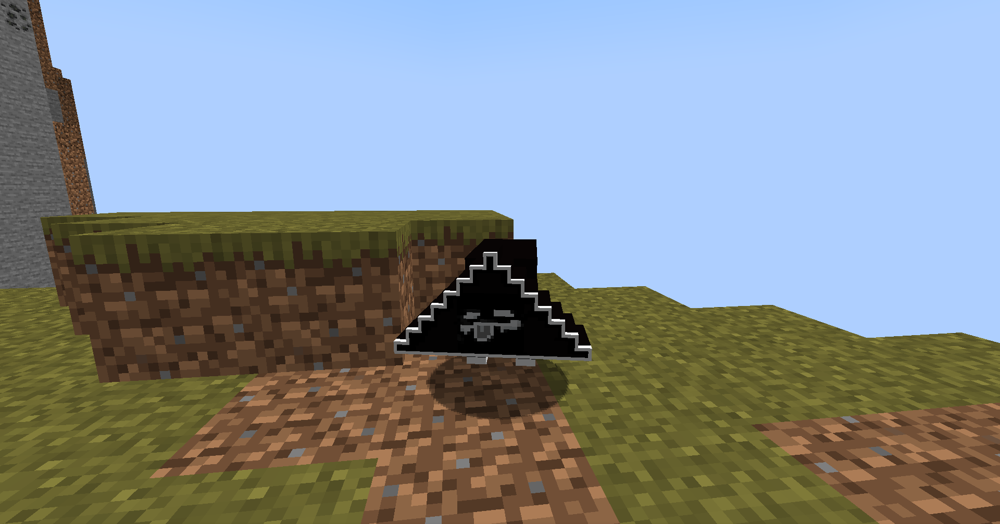
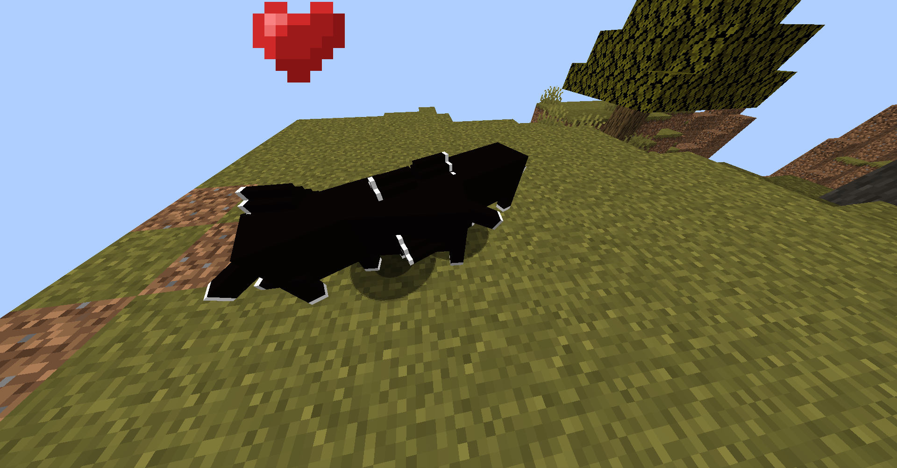
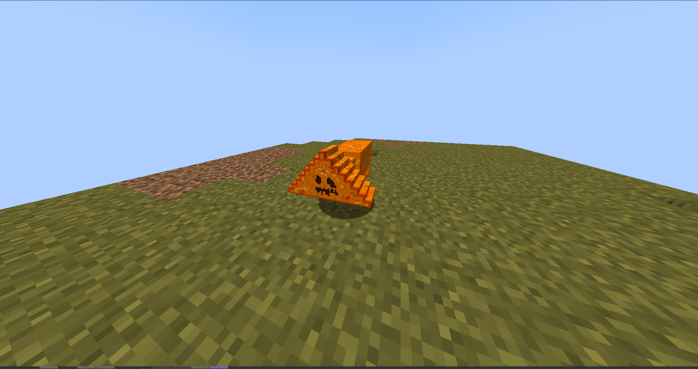
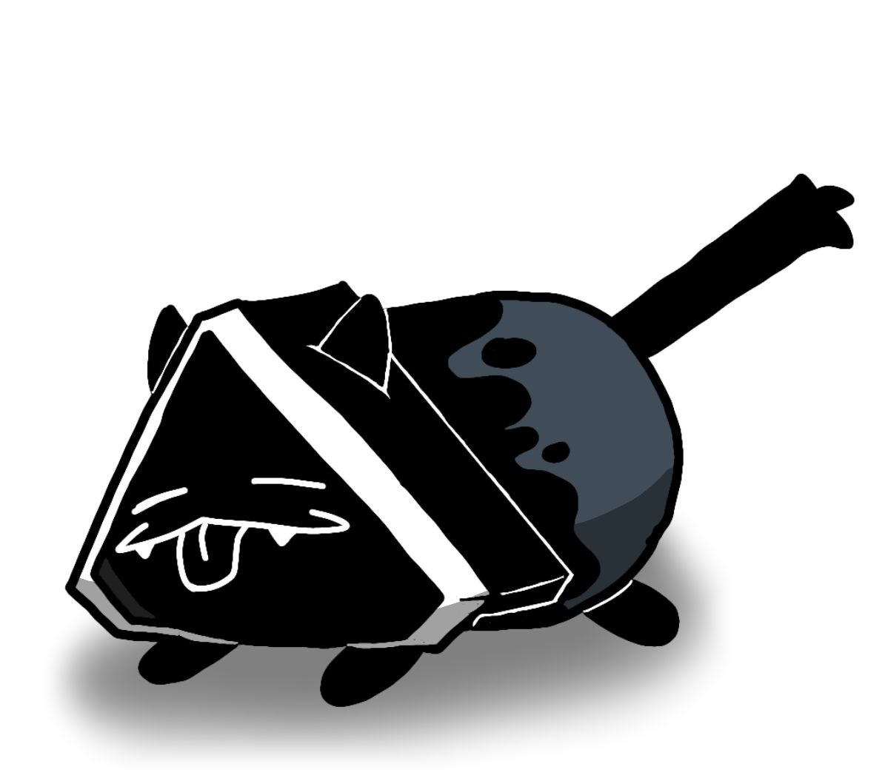

FolkCatMod
FolkCatMod — Мод на minecraft 1.20.1, вдохновлённый артом от HIbrid.
Ключевые особенности:
- Прикольно бегает.
- Будет следовать за игроком, если держать в руке гриб.
- Работает на всех платформах, где поддерживается minecraft.
- Есть хелловинская версия.




×